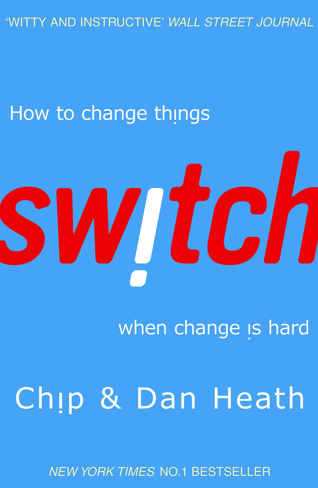

How to change things when change is hard?
August 18, 2026
All change = behavior change
For something to change, somebody somewhere has to start behaving differently—in other words, all change is ultimately behavior change. Chip Heath, American author
A bad habit is something where you have all the information you need to see it’s a bad behavior, yet you keep doing it anyway.
Are you engaged in some kind of behavior you want to change but struggle with? Why?
Write it down. This behavior is your case for the rest of the session.
03:00
A fundamental tension of psychology: knowing what the right answer is vs. doing it.
Psychological theory explains why this gap exists.
System 1 vs. System 2
Psychology assumes that two interacting systems shape thinking and behavior at all times (Kahneman, 2011).
| System 1 | System 2 |
|---|---|
| Fast, automatic | Slow, deliberate |
| Effortless | Effortful |
| Associative | Rule-based |
| Intuitive | Controlled |
Both systems operate simultaneously and often conflict (Kahneman, 2011).
I was a rider on the back of an elephant. […] I can direct things, but only when the elephant doesn’t have desires of his own. When the elephant really wants to do something, I’m no match for him. Haidt (2006)
| Metaphor | Corresponds to |
|---|---|
| Elephant | Automatic, emotional processes (System 1) |
| Rider | Controlled, reflective processes (System 2) |

Heath & Heath (2011) build on Haidt’s metaphor and add a third element: the path.
If you want to change things, you’ve got to appeal to both. The rider provides the planning and direction, and the elephant provides the energy. […] A reluctant elephant and a wheel-spinning rider can both ensure that nothing changes. But when elephants and riders move together, change can come easily. Heath & Heath (2011)
Direct the rider
Motivate the elephant
Shape the path
Analyze the behavior you identified in the opening exercise.
05:00
Mental paralysis is the feeling of being overwhelmed and unable to think or act, often caused by too many thoughts, emotions, or stimuli. It can feel like a “brain freeze” or “brain crash,” making it difficult to organize thoughts, process information, and start tasks.
Paralysis in the face of …
Tell us about a time when you experienced mental paralysis. How did it manifest? How could it have been avoided?
Willpower is an unreliable change strategy.
Change strategies relying purely on willpower are likely to fail.
What can you do to resolve mental paralysis and/or resistance?
Follow the bright spots
Script the critical moves
Point to the destination
Investigate what’s working and clone it. Heath & Heath (2011)
In 1990, Jerry Sternin was working for Save the Children, asked to open a new office in Vietnam “to make a difference” within 6 months (see e.g., Marsh et al., 2004).
Switch from a problem focus to a solution focus.
Don’t just think big picture,
think in terms of specific behavior. Heath & Heath (2011)
In 1996, GP Investimentos bought parts of the Brazilian railway network (a deteriorating mess) and set a young talent in charge: Alexandre Behring.
If you want to change things, be clear about how people should act.
Change is easier when you know where you’re going and why it’s worth it. Heath & Heath (2011)
By the late 1980s, BP struggled to find new oil reserves.
Paint a specific, rich, detailed picture of what the destination looks like to motivate people.
Your case: direct the rider.
04:00
Information vs. feeling
Can you think of any situations in life where you or others have tried to get people to change their minds with information, rather than with feelings?
How could those situations be approached differently to be more effective?
What can you do to prevent exhaustion?
Find the feeling
Shrink the change
Grow your people
Knowing something isn’t enough to cause change. Make people feel something. Heath & Heath (2011)
After enduring weeks of brutal chemotherapy in the hospital, the children struggled to faithfully take their medications at home.
If you skip 20 percent of your doses, you don’t have a 20 percent higher chance of getting cancer again. Your odds go up 200 percent. Steve Cole, research director for HopeLabs
HopeLab developed a game called Re-Mission (Kato et al., 2008).
Things you see are more likely to evoke emotion than things you read.
Make the need for change clear (tangible).
Downsize the change until it no longer frightens the elephant.
A local car wash ran a promotion featuring loyalty cards (Nunes & Dreze, 2006).
People find it motivating to be partly finished with a longer story than to be at the starting gate of a shorter one. Heath & Heath (2011)
Small targets lead to small victories, small victories can trigger momentum. Heath & Heath (2011)
Identities are central to the way people make decisions (March, 2009).
Blackwell et al. (2007) set up a study for seventh-grade math students in school in a low socioeconomic environment.
One hardcore, turned-off, low-effort kid in the group said, ‘You mean I don’t have to be dumb?’ From that day on, he worked. Heath & Heath (2011)
Create a sense of identity and convey a growth mindset.
Your case: motivate the elephant.
04:00
Environment shapes behavior.
Think back over your day: when and where did your environment significantly shape your behavior?
What can you do to make change more likely?
Tweak the environment
Build habits
Rally the herd
When the situation changes, the behavior changes. So change the situation. Heath & Heath (2011)
People vs. situation problems
We systematically overestimate personal factors and underestimate situational factors when explaining behavior: the fundamental attribution error (Ross, 1977).
Classic demonstration (Darley & Batson, 1973):
At Kaiser South San Francisco Hospital, nurses administer about 800 medications a day.
Situations trump personal attributes.
When behavior is habitual, it’s “free”—it doesn’t tax the rider. Look for ways to encourage habits. Heath & Heath (2011)
Pre-loading decisions through implementation intentions
Specifying the when, where, and how of goal pursuit significantly increases success rates (Gollwitzer, 1999).
| Simple Goal | Implementation Intention |
|---|---|
| “I intend to exercise more” | “If it’s Monday at 7am, I will put on running shoes and run for 20 minutes” |
| Weak commitment | Strong commitment |
| Moment-of-choice decision | Pre-decided action |
Let cues, not willpower, trigger the new behavior.
Behavior is contagious.
Help it spread. Heath & Heath (2011)
Goldstein et al. (2008) tested different signs asking hotel guests to reuse their towels.
Make the desired behavior visible and show that others already do it.
Your case: shape the path.
You now hold a complete Switch plan for your case.
04:00
All three components matter.
Success = all three aligned
| Model | Level | Focus |
|---|---|---|
| Unfreeze, change, refreeze (Lewin, 1951) | Organization | Phases of a change process |
| Eight-step process (Kotter, 1996) | Organization | Leadership actions along the process |
| Switch (Heath & Heath, 2011) | Individual and group | Behavioral levers at each step |
Redesign a failed change.
Think of a change initiative you’ve witnessed that failed.
10:00
You want to learn how to lead change more effectively? Here are three challenges that might help you along the way.
For digging deeper, start with the book this unit is based on (Heath & Heath, 2011) and the articles cited here. Beyond that:
How to change things when change is hard?
Andy Weeger andy.weeger@hnu.de
Steve Booth-Butterfield and Bill Reger, professors at West Virginia University, were contemplating ways to persuade people to eat a healthier diet. They concluded that you don’t need to change drinking behavior, but purchasing behavior. Thus, they launched a campaign that was punchy and specific in motivating people to buy low-fat (1%) milk (instead of the fuzzy message to act healthier) (Booth-Butterfield & Reger, 2004).
Heath & Heath (2011) base this hypothesis on ego depletion, which has not replicated (Hagger et al., 2016). Read “exhaustion” as the effect of stress, cognitive load, and the sustained effort of acting against established habits.
In 2004, Donald Berwick, a doctor and the CEO of the Institute for Healthcare Improvement, wanted to save a massive number of lives by reducing the “defect” rate in healthcare (e.g., administration of medication at the wrong time). Besides providing a crystal clear direction, he also motivated people by making them feel the need for change; he confronted hospital administrators with the mother of a girl who’d been killed by a medical error (Berwick et al., 2006).
Johnson & Goldstein (2003) compared organ-donor consent rates across European countries. Where citizens had to opt in, consent stayed low (e.g., 12% in Germany); where citizens had to opt out, consent approached 100% (e.g., 99.98% in Austria).
Bright spots don’t have to be shining success stories, just look for situations when things are working better than others.
Schwartz & Ward (2004) popularized the idea that more choice can make people worse off (see also Schwartz, 2009). A meta-analysis found a mean choice-overload effect close to zero, with large variation across studies (Scheibehenne et al., 2010). Treat choice overload as a conditional effect, most plausible when options are hard to compare and preferences are unclear, as is common during major change.
When the elephant really wants something, the rider can be trusted to find rationalizations for it.
Please consider that black and white goals create a danger of demoralization if you don’t meet them consistently.
Social Proof
If others do it, it must be appropriate.
Behavior is learned through observation and shaped by what others do (Bandura, 1977; Cialdini, 2006).